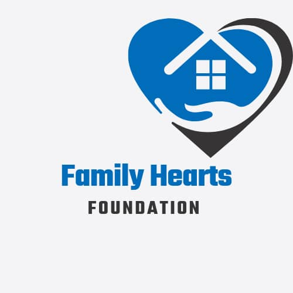
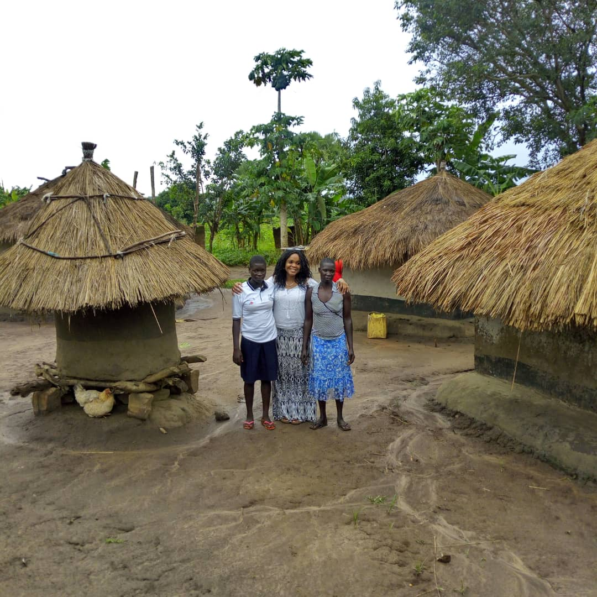
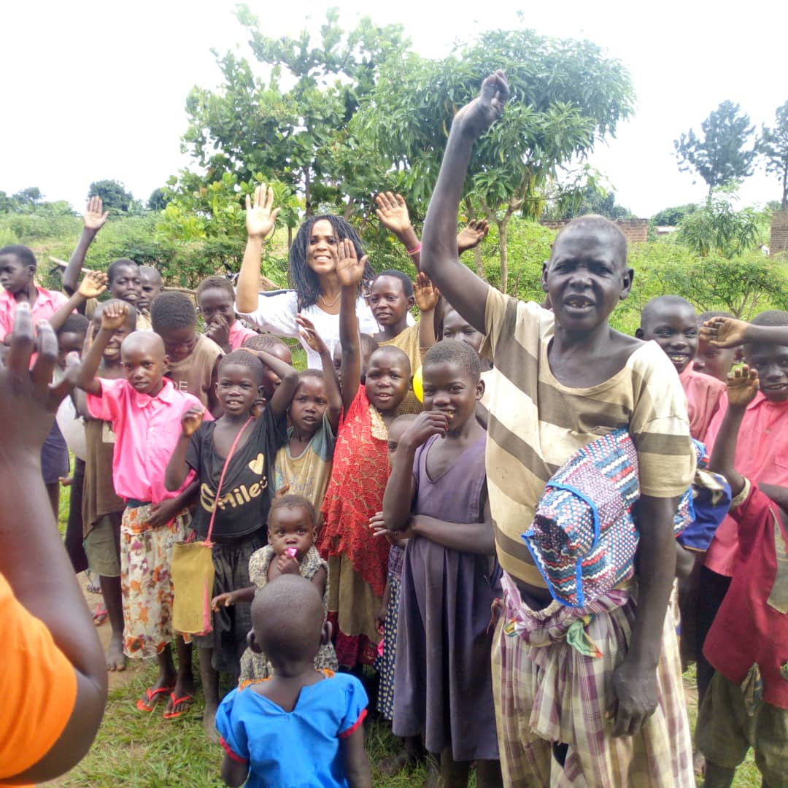
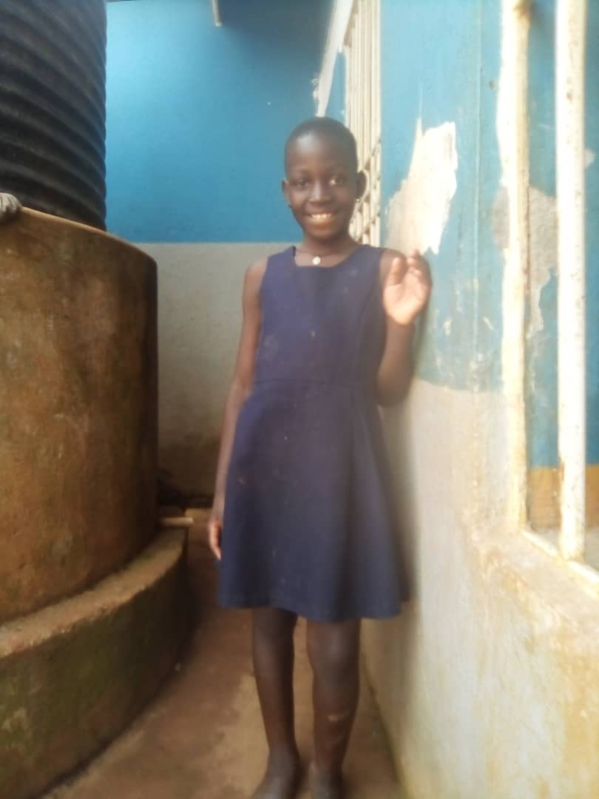
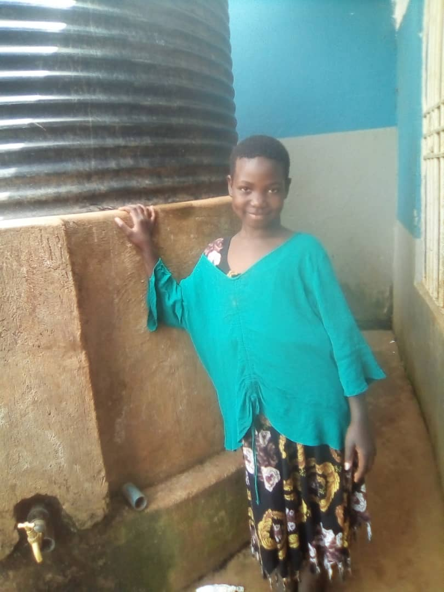
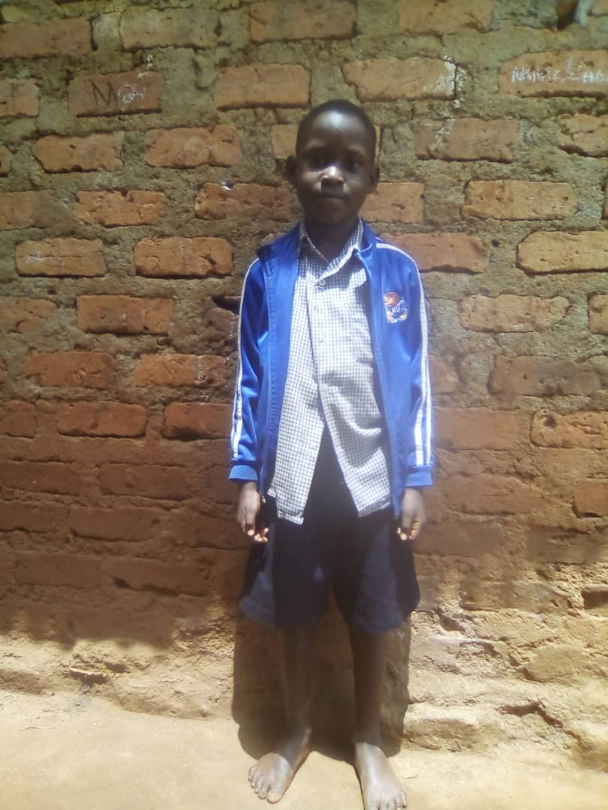
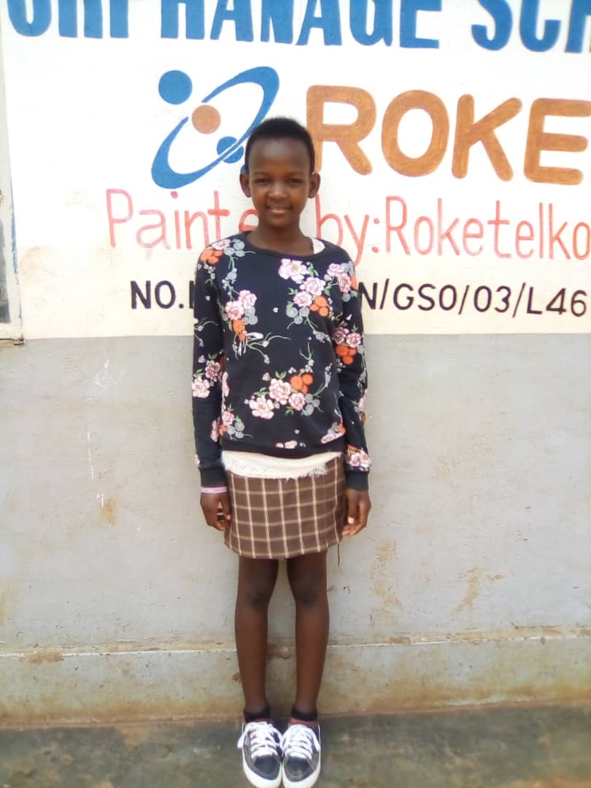
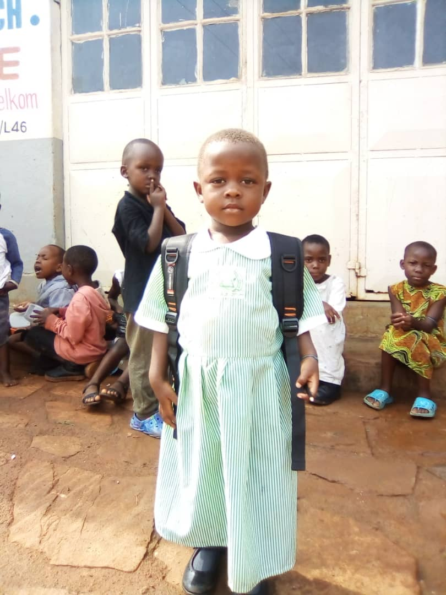
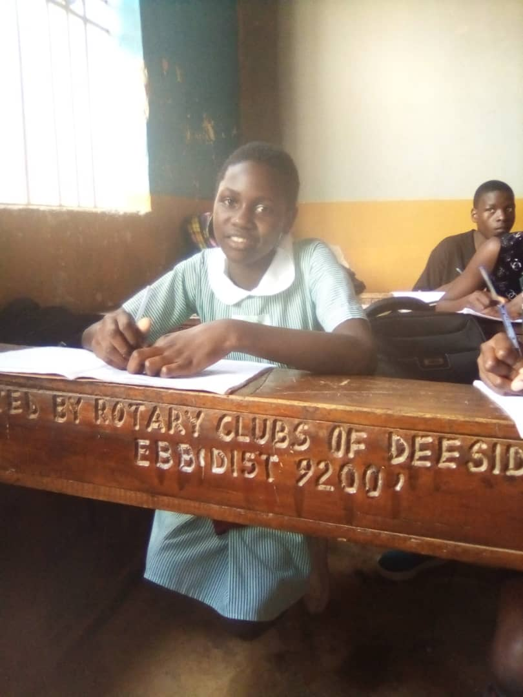
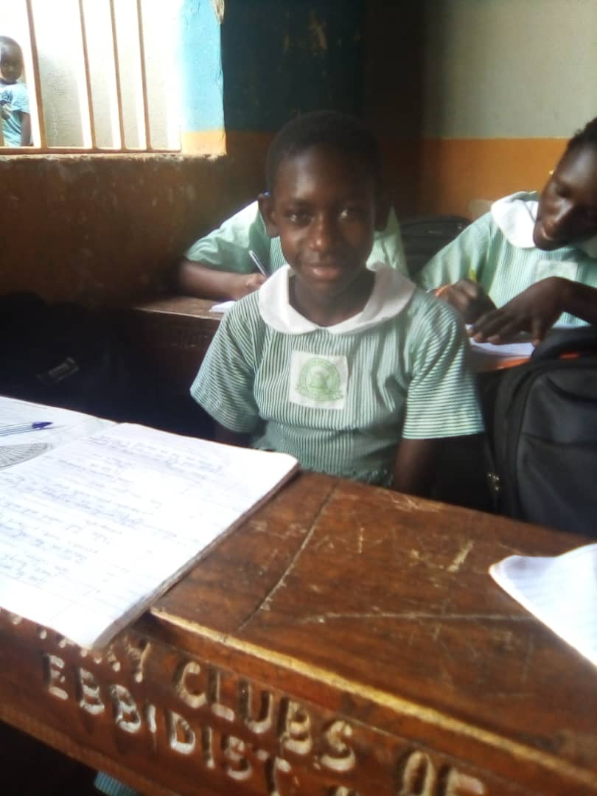

Working hand in hand with the ministry of Health through MARPI, NETCARE AND TASO we’ll be able to sensitize and provide medical treatment plus counselling them on how to live an HIV/AIDS life hence reducing no the chances of spreading the virus and other related diseases hence promoting health in the different societies.

Family Hearts Foundation
By using the word of God, we teach the teenagers in schools and at church the bible so that they grow up God fearing and preach more so of the UN Godly acts like forced marriages, rape casesmostly caused by the school dropout who resort to abusing drugs and later threats to the community.
PROJECT GOAL
To change the nation for God's purpose. To continue promoting the value of family to the child. To create a sense of belongingness, self-confidence and self-actualization by the child through the family.
OBJECTIVES
To preach God's word and love. To give the unprivileged children a chance to bright future and basic education. Offer technical skills to young mothers and unprivileged children like; tailoring, hairdressing, candle making among others.
STRATEGIES
Ministry of Health
Eradicate Prostitution
Helping the young girls practicing prostitution on the streets and in private by convincing them out of this act and providing them with options and activities that keep them busy and earn from them like hand crafts e.g. candle making,making rugs, soap etc.and providing market , joining them to institutions for short courses like hairdressing, cosmetology , tailoring hand.
Straight Talk
Through straight talk and other forms we inform the parents as a ‘’reminder’ ’on how it’s dangerous and illegal not to educate a child and instead force them into marriage and child labor with the help from FHRI (Foundation for Human Rights Initiative) and other NGOs like HRARF (Human Rights Awareness and Promotion Forum) we fight to put a stop to this child abuse and hence helping the children with any of our support project like hand work trainings or register them in school accordingly.
God Above All
By using the word of God, we teach the teenagers in schools and at church the bible so that they grow up God fearing and preach more so of the UN Godly acts like forced marriages, rape cases 11mostly caused by the school dropout who resort to abusing drugs and later threats to the community.
Counseling
For all the children enrolled in our project there is a counselling session on every meeting held with them accordingly.
Technical Program
And for the girls who would want to join the technical program they will be enrolled in their different homes or regions.
Namazzi Doreen
This little girl is aged 8, a primary 3 pupil. She was brought to the orphanage by her mother, Namuddu Zeridah who was once a pupil of the orphanage after conceiving early. She lost her father in 2019 and the mother couldnt take care of her so she decided to bring her to us.Sadly, Doreen literally has no relatives hence she's in our full control and care.
Nakaayi Tashimim
She's aged 10, in primary 4 and we received her in 2014.Her mother is Namale Zakiah, the father not known. She is extremely good mannered, bright with so much potential. Her dream is art and design.
Niwagaba Chozen
Aged 7, his parents Nambiro Joan and Niwagaba Yoweri residents of Buwaya Lulongo. He was left all alone in the family house and up to date, no one knows the whereabouts of his parents. He was brought to the orphanage by a well-wisher, Luyima Godfrey a resident of Buwaya.
Emelia Naisiiko
She's aged 12, in primary 7 and her mother was Namugga Francisca, the father Isiiko Patrick.They tested positive for HIV/AIDS and passed on 8 years ago. Luckily, Emelia is negative. Her uncle brought her to the orphanage in 2013 when she was 4 years old. Since the, she's been at the orphanage, with a bright future, she wants to be a lawyer.
Michelle Antonia
She's aged 3 and her mother is also part of the orphanage. The mother was defiled and she failed to recognize the father. Michelle was born at the orphanage on 11th June 2018.
Bukirwa Tibian
Aged 13, born on the 17th of September and she's in primary Seven.Received by the orphanage on 20th April 20014. She was brought by her uncle Ddumba Ismail, who was unable to cater for her after the death of her mother then he was directed to the orphanage and good thing we allowed her in
Nakibuule Aisha Shamirah
Aged 12 a born on 9th July 2009, a pupil of primary seven, her mother's name was Nattabi Razia a resident lugonjo. Received by the orphanage on 14th March, 2014.
